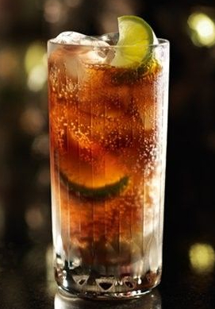

Cuba Libre

Ingredientes:
50 ml de rum branco
Suco de meio limão
Refrigerante de cola
Gelo
Fatia de limão para decorar (opcional)
Modo de preparo:
Encha um copo alto com gelo.
Adicione o rum branco no copo.
Esprema o suco de meio limão diretamente no copo.
Complete o copo com refrigerante de cola, deixando um espaço para mexer.
Mexa suavemente com uma colher longa para misturar os ingredientes.
Se desejar, decore o copo com uma fatia de limão.
Sirva imediatamente e desfrute do seu Cuba Libre!
O Cuba Libre é um coquetel simples e clássico que combina o sabor do rum com o toque cítrico do limão e a doçura da cola.
Você pode ajustar as proporções dos ingredientes de acordo com o seu gosto pessoal. Aproveite o seu Cuba Libre!